Stepwise Refinement
Fred Agbo
August 31, 2026
Happy New Week!!
- Scan the QR code or go to https://tools.jedrembold.prof/daily
- Login with your Willamette Email ID.
- Join the class group. The code is
qUhTrP
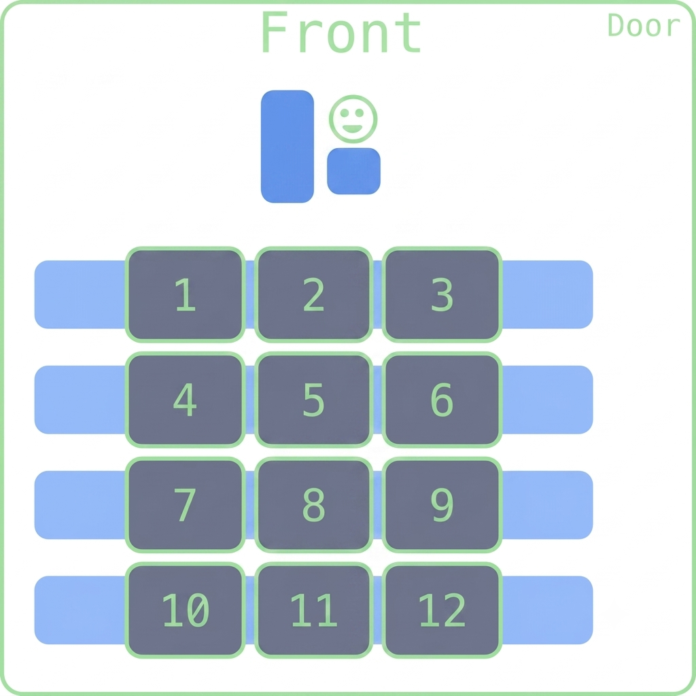
Announcements
- Remember, problem Set 1 is due on Monday Sept. 7th @ 10pm!
- Small sections started this week. Keep attending
- Remember! The channel for getting help is Section leaders, QUAD, Instructors
- Did you not get a message from Prof. Jed about your section
meeting time?
- Come see me after class and we can see about getting you placed into one.
- Welcome to TechByte event tomorrow Tuesday September 1 by 12 pm @ Ford 102.
Group Problems Activity
Preliminaries
- Take a quick moment to introduce yourself to your group-mates for
the day
- Name
- Class year
- Major?
Considerations
- Don’t forget about decomposition!
- For all code writing questions today, try to think about how you
could decompose it into at least two parts
- Frequently, you’ll be able to reuse one of those parts!
- You already got the repository of worlds for today’s problems here
- Not required, but there if you want to be able to test solutions
Problem 1: Wondering Karel
Karel starts as shown to the right. At which beeper do they end up when the below sequence of commands finishes?
while no_beepers_present():
while front_is_clear():
move()
if beepers_present():
turn_left()
else:
turn_right()
turn_left()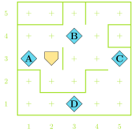
Problem 2: The Race
- Karel starts at the bottom of a world facing north
- There are exactly two stacks of beepers placed somewhere above them
- To win the race Karel needs to pick up both stacks of beepers and
then touch the North wall
- Remember that Karel can only pick up one beeper at a time!
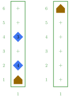
Live-Coding: More Bars in More Places
- A line of stacks of beepers goes across the bottom of Karel’s world
- Karel’s job is to spread each stack out on the corresponding avenue, with 1 beeper on each street, starting from 1st street
- You don’t know how big the world is, or how many beepers might be in
each stack
- But there will be fewer beepers than the height of the world
- Karel always starts from the lower right facing west
Visualized
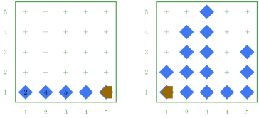
A Narrow Path - Practice Problem
- There is a beeper path that extends from one side of the world to the other
- Karel starts on one end, facing toward the first beeper
- Goal is to follow the path to the other end
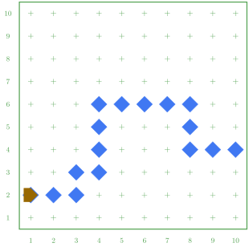
Stepwise Refinement
- The most successful way to solve a complex problem is to break it down into progressively simpler problems
- Begin by breaking the whole problem into a few simpler parts
- Some of these parts might then need further breaking down into even simpler parts
- The process is commonly called stepwise refinement or decomposition
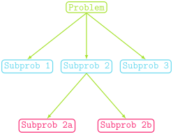
Excellent Decomposing
A good problem decomposition should mean:
- The proposed pieces should be easy to explain
- One indication that you have succeeded is if it is easy to give them simple names
- The steps are as general as possible
- Each piece of code you can reuse is one less piece of code you need to write! If your steps solve general tasks, they are much easier to reuse.
- The steps should make logical sense for the problem you are solving
- If you have a function that will work to solve a step but was designed (and named) with something else entirely in mind, adopt it for the currently needed situation
Enter the Winter
- Suppose we want Karel to usher in the Fall/Winter by removing the “leaves” from the tops of all the trees

Understanding the Problem
- What are we guaranteed by the problem?
- How will we know when we are done?
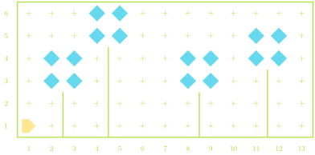
Understanding the Problem
- There are four trees in this problem
- We need to find a tree at a time
- We need to remove the leaves
- there are four leaves per tree
Top-Level Decomposition
- We could break this problem into two main subproblems:
- Find the next tree
- Strip the leaves off that tree
Top-Level Decomposition
- We could break this problem into two main subproblems:
- Find the next tree
- Strip the leaves off that tree
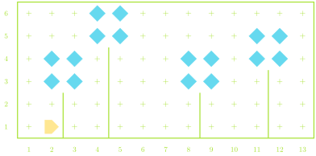
Top-Level Decomposition
- We could break this problem into two main subproblems:
- Find the next tree
- Strip the leaves off that tree
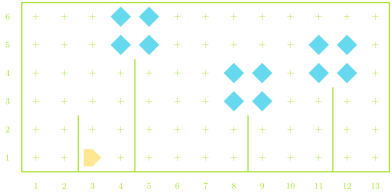
Top-Level Decomposition
- We could break this problem into two main subproblems:
- Find the next tree
- Strip the leaves off that tree
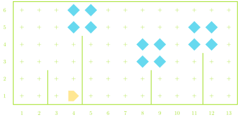
Top-Level Decomposition
- We could break this problem into two main subproblems:
- Find the next tree
- Strip the leaves off that tree
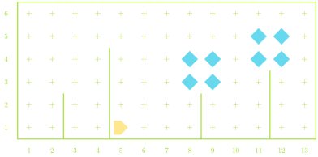
Top-Level Decomposition
- We could break this problem into two main subproblems:
- Find the next tree
- Strip the leaves off that tree
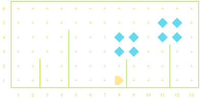
Top-Level Decomposition
- We could break this problem into two main subproblems:
- Find the next tree
- Strip the leaves off that tree
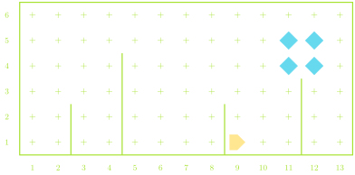
Top-Level Decomposition
- We could break this problem into two main subproblems:
- Find the next tree
- Strip the leaves off that tree
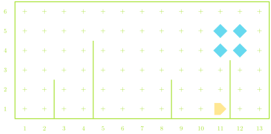
Top-Level Decomposition
- We could break this problem into two main subproblems:
- Find the next tree
- Strip the leaves off that tree
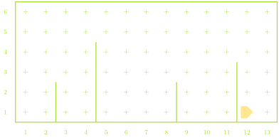
Remember Your Algorithms!
- Algorithmic design: The process of designing a solution strategy to a problem
- An algorithm is just an approach or recipe for a method to
solve a particular problem
- Frequently language agnostic
- Can you design algorithm to address the Fall/Winter problem?
Algorithm ⮕ Code
- for four iterations
- find a tree
- then remove leaves
- while the front is clear
- keep moving
- move up the tree
- remove each leaf
- move down the tree
Algorithm ⮕ Code
import karel
def main():
# Here is our general solution with higher level of decomposition
for i in range(3):
find_next_tree()
remove_leaves()def find_next_tree():
# the codes to find next tree
while front_is_clear():
move()def remove_leaves():# codes to remove leaves
move_up()
deleaf()
move_down()- moving up
def move_up():
turn_left()
while right_is_blocked():
move()- deleafing
def deleaf():
pick_beeper()
for i in range(3):
move()
pick_beeper()
turn_right()
turn_left()- moving down
def move_down():
while front_is_clear():
move()
turn_left()